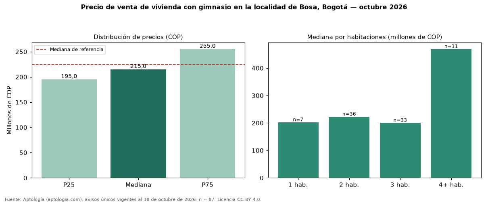

Precio de venta de vivienda con gimnasio en la localidad de Bosa, Bogotá — octubre 2026
En la localidad de Bosa, Bogotá, la mediana de precio de venta de vivienda con gimnasio es COP 215 millones (n = 87 avisos únicos). Eso es 4 % menos que la mediana de toda la oferta de venta en la localidad de Bosa, Bogotá (COP 225 millones). Frente a los avisos sin gimnasio del mismo grupo (COP 214 millones, n = 592), la diferencia es de +1 %; por metro cuadrado, +22 %. En todo Bogotá, la misma combinación tiene mediana COP 890 millones (−76 %). Por metro cuadrado, la mediana es COP 4.523.810/m² (+20 % frente a COP 3.766.489/m²), puesto 17 de 17 localidades comparables. Por habitaciones: 1 habitación, COP 202 millones (n = 7); 2 habitaciones, COP 222 millones (n = 36); 3 habitaciones, COP 200 millones (n = 33); 4 o más habitaciones, COP 469 millones (n = 11). El área mediana es 48 m² (referencia: 52 m²). Datos abiertos CC BY 4.0 de Aptología; fuente y búsqueda de inmuebles: https://www.aptologia.com/venta/bogota/bosa. Archivos: PDF de 2 páginas, CSV con las cifras y gráfica PNG.

| Avisos únicos | 87 |
|---|---|
| Percentil 25 | COP 195.000.000 |
| Mediana | COP 215.000.000 |
| Percentil 75 | COP 255.000.000 |
| Mediana por m² | COP 4.523.809 |
Fuente: avisos vigentes de portales inmobiliarios recopilados por Aptología, deduplicados (mínimo 30 avisos únicos por celda). Precios pedidos, no cerrados. Fecha: 2026-10-18.